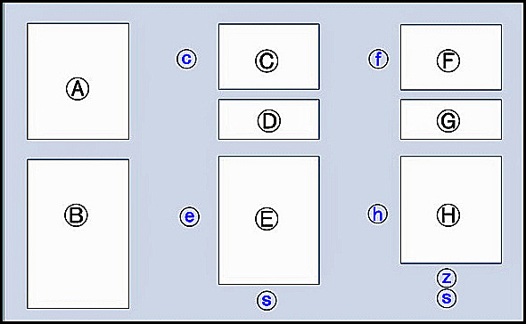

The Administer Person Name Styles screen gives the user access to a very powerful feature of HRE: the ability to define and then implement a range of name styles and location styles to accommodate a range of personal, cultural and geographical types and usages.
The layout of the screen for Administering Name Styles (for both Person Names and Locations) is as shown in the diagram below.
Section [A] contains basic information on the layout of the screen and how to use it.
Section [B] contains a list of all the elements currently defined for use in a Name Style, either for a Person or a Location, depending on which screen is showing. As the format and function of both types of screen is the same, we will use Person Names in the following description, for the sake of simplicity.
Section [C] contains a list of the names of all currently defined Styles of the chosen type (Person or Location) and when the screen opens, the first item in the list is pre-selected. A longer Description of the selected Name Style is displayed in Section [D] and may be edited.
Section [E] contains a list of the elements existing in the Name Style selected in Section [C].
Buttons for Copy, Delete and Rename of the Name Styles in Section [C] exist to its immediate left in area (c). Some of these buttons may be set inactive, depending on the type of Name Style selected - see the table below. Area (c) also contains a 'Default' checkbox which indicates which Name Style is the Default Style (there must be one and only one Default Name Style). This checkbox may be selected to change which Style is the Default one.
Buttons for manipulating the name elements in Section [E] exist in area (e). These allow elements in the list in Section [E] to be re-ordered, removed from the list, renamed, and for further elements contained in Section [B] to be added to the list in Section [E]. Also, the user may add new elements into the list in Section [B] for use in personal Name Styles. Some of these buttons may also be inactive depending on the type of Name Style being modified.
The 'Save' button in area (s) below Section [E]) will become active if Name Style changes require saving. Changes made in Section [C] are saved automatically and will not activate the 'Save' button.
The third column of the screen, Sections [F], [G] and [H], control changes to the Output Styles associated with any Name Style selected in Section [C]. Buttons in areas (f) and (h) work in a similar, but more restricted fashion, to the buttons in areas (c) and (e). Area (f) also displays the Output Style's type - either for Reports or Display (on screen). The type may be changed, with the restriction that a Person Name style must always have a minimum of 2 'Display' types (or one for Locations).
The 'Add/Remove Comma' button (z) below Section [H] controls whether or not the element selected in [H] has a comma following the element when that Output Style is used.
The 'Save' button in area (s) below Section [H] will become active if Output Style changes require saving. Changes made in Section [F] are saved automatically and will not activate the 'Save' button.
If the 'Close' button in area (s) below Section [H] is clicked when there are unsaved changes, you will be prompted to Save these changes or proceed to close the screen without saving.
Rules Controlling Manipulation of the Name Styles
IMPORTANT NOTE: When a Name Style is copied, all associated Output styles are also copied. Likewise, if a Name Style is deleted, all associated Output styles are also deleted.
If Name Styles have been imported into HRE from TMG, specific restrictions exist on the TMG styles, as shown in the following table. Because HRE Name Styles are far more sophisticated than TMG styles, users are encouraged to convert to the use of HRE Name Styles.
Name Style's Origin |
Can be Copied? |
Can be Updated? |
Can be Deleted? |
Can be Renamed? |
HRE system supplied |
Yes |
Yes |
No |
No |
HRE user created |
Yes |
Yes |
Yes (if not the current DEFAULT) |
Yes |
Imported TMG System styles |
No |
No |
Yes (if not used) |
No |
Imported TMG user-created styles |
No |
Yes |
Yes (if not the current DEFAULT) |
Yes |
Converting TMG Name Styles to HRE
See How to Convert a TMG Namestyle to HRE